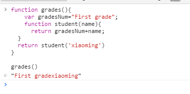
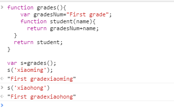
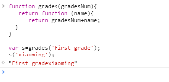
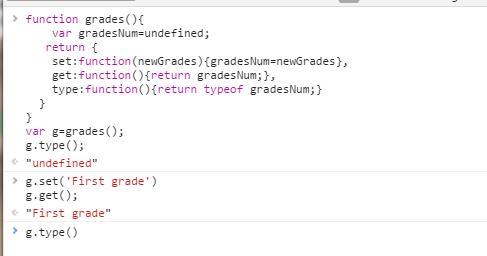

在读这篇文章之前，自己听过很多人对闭包的不同的解释，好像一直没有一个确定的定义，而自己对闭包的理解概念：函数在执行的时候会形成一个私有的作用域，函数只想完成之后而且这个作用域不被销毁，就成为闭包。
今天翻阅阮一峰的博客，他在介绍闭包的概念是，是做的这样的解释：
闭包就是能够读取其他函数内部变量的函数。
由于在Javascript语言中，只有函数内部的子函数才能读取局部变量，因此可以把闭包简单理解成”定义在一个函数内部的函数”。
所以，在本质上，闭包就是将函数内部和函数外部连接起来的一座桥梁。
在本书中，对闭包的理解是这样解释的：
下面对每一句进行列举说明
1、JavaScript 语序引用在当前函数以外定义的变量
function grades(){
var gradesNum="First grade";
function student(name){
return gradesNum+name;
}
return student('xiaoming')
}

此处student函数，引用了外部的函数grades中的变量gradesNum
2、即使外部函数已经返回，当前函数依旧可以医用在外部函数所定义的变量
function grades(){
var gradesNum="First grade";
function student(name){
return gradesNum+name;
}
return student;
}
var s=grades();
s('xiaoming');
s('xiaohong')

在此函数中，看起来跟上面函数类似，但不同的是，上面的函数直接调用函数student(‘xiaoming’)，但是下面的函数返回的是函数student。s的值为内部的student函数，但实际上s是调用了student函数。即使函数grades已经返回，但是依旧可以记住并且使用gradesNum的值。
我们可以编写更加通用，优雅的函数

3、闭包在内部存储器外部变量的引用，并能够读写这些变量
function grades(){
var gradesNum=undefined;
return {
set:function(newGrades){gradesNum=newGrades},
get:function(){return gradesNum;},
type:function(){return typeof gradesNum;}
}
}

该例子产生了一个包含三个闭包的对象。这三个闭包是set、get、type属性。他们共同访问gradesNum。set闭包更新了其值。